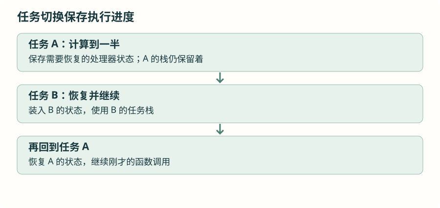

任务什么时候运行：从等待读懂调度
两个任务都在循环，为什么还能轮流前进？先看等待怎样交出执行机会，再看优先级怎样决定下一步，最后把系统节拍和周期工作接起来。
1 · 先区分三种处境
某个任务此刻可能正在执行；也可能已经具备运行条件，但处理器正在执行另一个任务；还可能正在等时间或等事件。它们分别叫运行、就绪、阻塞。
| 任务状态 | 能否被安排执行 | 例如 |
|---|---|---|
| 运行 | 此刻正在执行 | 声音任务正在计算声音强弱。 |
| 就绪 | 已经能执行，等待选择 | 传感器数据到了，但另一个更高优先级任务正在运行。 |
| 阻塞 | 等待条件还没满足 | 任务调用延时接口，或等待信号量。 |
定时等待结束、事件到来，会让任务重新就绪。重新就绪不保证这一刻就开始执行，还要看其他任务的优先级。另有显式挂起状态，要用恢复操作使它重新参与调度；等待传感器事件时优先使用后面要讲的阻塞接口，不用反复挂起、恢复任务来拼接事件通知。
2 · 切走以后，为什么还能接着执行？
执行一个函数时，处理器寄存器里可能放着中间结果，栈上保存局部数据和返回位置。任务切换需要保存足以恢复执行的状态，再装入下一个任务的状态。这些统称执行上下文。对任务代码来说，恢复后就像从暂停的位置接着往下执行。

这些保存恢复由内核与当前处理器端口共同完成，应用不需要手写寄存器搬运。需要继续研究时，再看篇末的处理器端口入口。
3 · 等待任务，和让处理器忙着等有什么区别？
在 vTaskDelay() 中，任务登记好唤醒时间后进入阻塞；处理器可以执行其他就绪任务。HAL_Delay() 通常在循环中反复查看 HAL 的时间计数，它本身不会把当前任务登记为 FreeRTOS 的阻塞任务。中断与更高优先级任务仍可能打断它，但它会继续占用本优先级能得到的执行机会。
系统节拍英文叫 tick，是内核用于计时的基本单位。项目 configTICK_RATE_HZ = 1000，每秒 1000 个节拍，名义上每个 1 毫秒。pdMS_TO_TICKS() 负责单位转换；其他节拍频率下，过短毫秒数可能被换成零。
延时结束只是恢复就绪。调用发生在一个节拍内的哪个位置、是否还有更高优先级工作，都会影响实际恢复时间，所以延时接口不能当作精确的采样时钟。传感器采样仍由已经配置好的传感器硬件负责。
4 · 优先级到底怎样起作用？
在当前单核抢占配置中，调度器优先执行就绪任务里优先级最高的一个。FreeRTOS 任务优先级数值越大，优先级越高；这和 Cortex-M 中断优先级数字的习惯不同。相同优先级任务可按时间片轮换，具体取决于内核配置。
将上一篇的 TaskA 改成优先级 2，TaskB 保持 1。TaskA 仍然延时，TaskB 就能在它阻塞期间执行。再只去掉 TaskA 的延时：TaskA 始终就绪，TaskB 便可能一直无法执行。taskYIELD() 主动请求重新选择任务，也不保证会让低优先级任务运行，因为高优先级任务仍然是就绪的。
高优先级应该反映工作的响应要求，而不是“这个功能比较重要”的直觉。一次计算太长、永远不进入阻塞，仍会挤占其他任务的处理时间。
5 · 每次等待 100 毫秒，就是每 100 毫秒执行吗？
若工作先花了 8 毫秒，再调用 vTaskDelay(100 毫秒)，下次工作约相隔 108 毫秒，还可能受调度延迟影响。每轮的工作时间都会附加进去。希望沿固定时间基准推进时，可以用：
替换计数实验中的循环 · 当前仓库内核 V11.2.0 提供此接口
TickType_t last_wake = xTaskGetTickCount();
const TickType_t period = pdMS_TO_TICKS(100);
for (;;) {
count_a++;
xTaskDelayUntil(&last_wake, period);
}last_wake 在循环前取得初始基准，接口会逐次更新它。工作若超时，目标时刻可能已经过去，这次就不会正常阻塞；不能因此承诺程序一定赶上进度。仓库也兼容旧名 vTaskDelayUntil()，本章使用能返回是否发生等待的 xTaskDelayUntil()。
本节的等待用于安排任务。要求稳定采样间隔时，仍用传感器采样时钟或 ADC 触发方式。FreeRTOS 软件定时器是在服务任务中运行回调的另一种安排方式，和 TIM 硬件定时器不同；它适合后续短小的周期维护工作，回调不应长时间等待。
6 · 把原理落实到观察结果
完成三组实验：相同优先级都延时；A 优先级更高但仍延时；A 优先级更高且不延时。每次只改一项，先预测哪个计数器会增加，再运行核对。恢复正确等待方式后，确认 B 重新前进。
没有就绪的应用任务时，系统可以执行空闲任务。项目还配置了空闲低功耗机制，使处理器有机会等待中断；具体省电配置留在系统拓展中。本节首先要保证该等待的任务确实进入了等待。
资料与源码
本章按仓库当前 FreeRTOS V11.2.0 与 STM32U5 端口核对接口。图解描述执行关系，任务耗时和硬件行为需在实际工程观察。